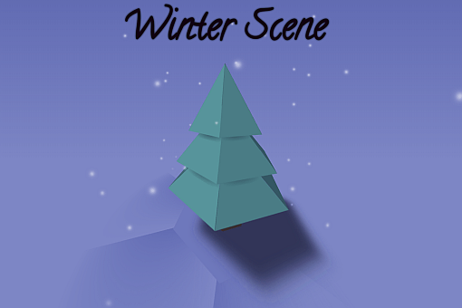
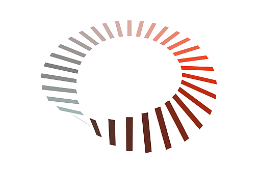
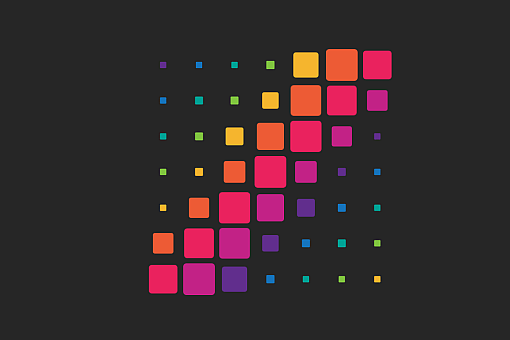
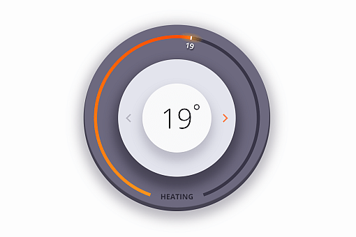
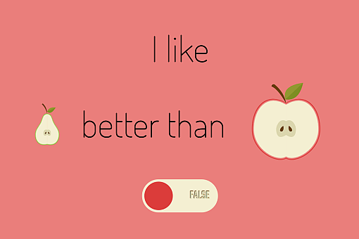
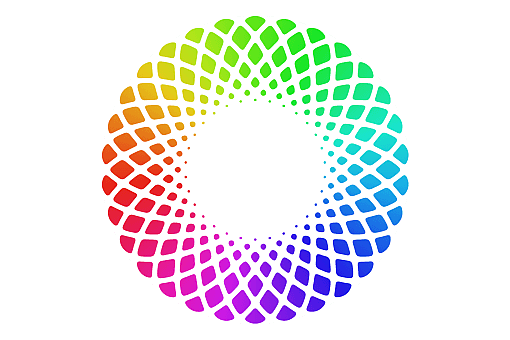

<!DOCTYPE html>
<html lang="en">

</html>

<head>
  <meta http-equiv="Content-Type" content="text/html; charset=utf-8">
  <title>Ana Tudor :: Work</title>
  <link rel="stylesheet" href="styles/style.processed.css">
</head>

<body>
  <header>
    <h1><a href="/index.html">Ana Tudor</a></h1>
    <nav><a href="/poststalks.html">Posts + Talks</a><a href="/work.html">Work</a><a href="/hireme.html">Hire Me!</a></nav>
  </header><svg width="0" height="0"><symbol id="icn-cp" viewBox="-100 -100 200 200"><path fill="none" stroke="currentcolor" stroke-width="17" stroke-linejoin="round" d="M0-91.5l92 61-92 61-92-61 92-61v61l92 61-92 61-92-61 92-61M0 32v60M92-30v60M-92-30v60"></path></symbol><symbol id="icn-yt" viewBox="0 0 1500 1500" fill="currentcolor"><linearGradient id="l" x2="0" y2="1"><stop stop-color="#e52d27"></stop><stop offset="1" stop-color="#c1171d"></stop></linearGradient><path d="M 9 750c5-515 0-520 741-515 741-5 736 0 741 515-5 515 0 520-741 515-741 5-736 0-741-515"></path><path d="M1002 750l-404-200v400" fill="#fff"></path><path d="M 951 775l51-25-404-200" fill="#e8e0e0"></path></symbol></svg>
  <main>
    <h2>Work Samples</h2>
    <p>This is a showcase of a few of the things I've coded. For each of them, I've included info about the time it took me to <em>code</em> it, what it uses, browser support and, in most cases, links to the live demo and a video of me coding the thing.
      You can check out more on my <a href="https://codepen.io/thebabydino/">CodePen</a> and <a href="https://www.youtube.com/anatudor">YouTube</a> profile pages.</p>
    <p>If you like these demos and you'd like me to be able to do more in the future, please consider supporting my work with a <a href='https://liberapay.com/anatudor/donate'>donation</a> or by getting me something off my Amazon wishlist (<a href='https://www.amazon.com/gp/registry/wishlist/2Y3C4722GXH0I/'>🇺🇸</a>      / <a href='https://www.amazon.co.uk/gp/registry/wishlist/2I25W7U0KADSR/'>🇬🇧</a>). Over 90% of the stuff I do is not paid in any way so anything can help with staying afloat.</p>
    <h3>CSS 3D</h3>
    <ul class="demos">
      <li class="demo">
        <h4>Mighty octopus</h4>
        <section><span class="demo__time">35min</span><a href="https://youtu.be/CyENEWZeFho"><svg class="icn"><use xlink:href="#icn-yt"></use></svg><span>video</span></a><a href="https://codepen.io/thebabydino/pen/oGPGxw/"><svg class="icn"><use xlink:href="#icn-cp"></use></svg><span>code</span></a></section>
        <dl><dt>Using</dt>
          <dd>Maths, Haml, HTML, Sass, CSS (variables, 3D transforms)</dd><dt>Support</dt>
          <dd>Chrome, Firefox 57+</dd>
        </dl>
      </li>
      <li class="demo">
        <h4>Winter scene</h4>
        <section><span class="demo__time">1h 10min</span><a href="https://youtu.be/AeQvfZE33Fw"><svg class="icn"><use xlink:href="#icn-yt"></use></svg><span>video</span></a><a href="https://codepen.io/thebabydino/pen/vpyPmN/"><svg class="icn"><use xlink:href="#icn-cp"></use></svg><span>code</span></a></section>
        <dl><dt>Using</dt>
          <dd>Maths, Pug, HTML, Sass, CSS (variables, 3D transforms)</dd><dt>Support</dt>
          <dd>Chrome (Experiemental Web Platform Features flag)</dd>
        </dl>
      </li>
    </ul>
    <h3>Loaders</h3>
    <ul class="demos">
      <li class="demo">
        <h4>Infinite twisting strip</h4>
        <section><span class="demo__time">19min</span><a href="https://youtu.be/eKkxfngCg0U"><svg class="icn"><use xlink:href="#icn-yt"></use></svg><span>video</span></a><a href="https://codepen.io/thebabydino/pen/NXqpez/"><svg class="icn"><use xlink:href="#icn-cp"></use></svg><span>code</span></a></section>
        <dl><dt>Using</dt>
          <dd>Maths, Pug, HTML, Sass, CSS (variables, 3D transforms)</dd><dt>Support</dt>
          <dd>Chrome, Firefox 57+</dd>
        </dl>
      </li>
      <li class="demo">
        <h4>Rainbow tiles</h4>
        <section><span class="demo__time">25min</span><a href="https://codepen.io/thebabydino/pen/mOJvyB/"><svg class="icn"><use xlink:href="#icn-cp"></use></svg><span>code</span></a></section>
        <dl><dt>Using</dt>
          <dd>Maths, Haml, HTML, Sass, CSS (transforms)</dd><dt>Support</dt>
          <dd>cross-browser</dd>
        </dl>
      </li>
    </ul>
    <h3>Controls</h3>
    <ul class="demos">
      <li class="demo">
        <h4>Thermostat</h4>
        <section><span class="demo__time">55min</span><a href="https://youtu.be/yhwGL1I9LP0"><svg class="icn"><use xlink:href="#icn-yt"></use></svg><span>video</span></a><a href="https://codepen.io/thebabydino/pen/eGvNjr/"><svg class="icn"><use xlink:href="#icn-cp"></use></svg><span>code</span></a></section>
        <dl><dt>Using</dt>
          <dd>HTML, Sass, CSS (variables, conic gradients), JavaScript</dd><dt>Support</dt>
          <dd>Chrome (Experiemental Web Platform Features flag)</dd>
        </dl>
      </li>
      <li class="demo">
        <h4>Fruit toggle</h4>
        <section><span class="demo__time">1h 10min</span><a href="https://youtu.be/jwOGjuWcIV4"><svg class="icn"><use xlink:href="#icn-yt"></use></svg><span>video</span></a><a href="https://codepen.io/thebabydino/pen/XVgmdR/"><svg class="icn"><use xlink:href="#icn-cp"></use></svg><span>code</span></a></section>
        <dl><dt>Using</dt>
          <dd>Pug, HTML, SVG, Sass, CSS (variables)</dd><dt>Support</dt>
          <dd>Chrome, Firefox 59+</dd>
        </dl>
      </li>
    </ul>
    <h3>Logos</h3>
    <ul class="demos">
      <li class="demo">
        <h4>Chrome</h4>
        <section><span class="demo__time">35min</span><a href="https://youtu.be/xR1Nexgdrog"><svg class="icn"><use xlink:href="#icn-yt"></use></svg><span>video</span></a><a href="https://codepen.io/thebabydino/pen/eewbOJ/"><svg class="icn"><use xlink:href="#icn-cp"></use></svg><span>code</span></a></section>
        <dl><dt>Using</dt>
          <dd>Pug, SVG (1.55KB)</dd><dt>Support</dt>
          <dd>cross-browser</dd>
        </dl>
      </li>
      <li class="demo">
        <h4>Rainbow</h4>
        <section><span class="demo__time">9min</span><a href="https://youtu.be/3m1fOiIY7JY"><svg class="icn"><use xlink:href="#icn-yt"></use></svg><span>video</span></a><a href="https://codepen.io/thebabydino/pen/OpzdRq/"><svg class="icn"><use xlink:href="#icn-cp"></use></svg><span>code</span></a></section>
        <dl><dt>Using</dt>
          <dd>CSS (<code>conic-gradient</code> with .js polyfill if no native support, <code>mix-blend-mode</code>, <code>filter</code>)</dd><dt>Support</dt>
          <dd>Chrome, Firefox</dd>
        </dl>
      </li>
      <li class="demo">
        <h4>Twitter</h4>
        <section><span class="demo__time">35min</span><a href="https://codepen.io/thebabydino/pen/bqwYYW/"><svg class="icn"><use xlink:href="#icn-cp"></use></svg><span>code</span></a></section>
        <dl><dt>Using</dt>
          <dd>Pug, SVG (306 bytes)</dd><dt>Support</dt>
          <dd>cross-browser</dd>
        </dl>
      </li>
      <li class="demo">
        <h4>Stack Overflow</h4>
        <section><span class="demo__time">20min</span><a href="https://codepen.io/thebabydino/pen/bqwYYW/"><svg class="icn"><use xlink:href="#icn-cp"></use></svg><span>code</span></a></section>
        <dl><dt>Using</dt>
          <dd>Pug, SVG (252 bytes)</dd><dt>Support</dt>
          <dd>cross-browser</dd>
        </dl>
      </li>
    </ul>
  </main>
  <footer>© 2016-2018 Ana Tudor </footer>
</body>